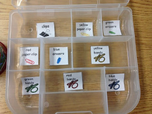

sortedcontainers e o velho erro da falta de índice
Otimizando código Python com os módulos sortedcontainers e profile.

Preciso distrinchar um arquivo texto, palavra por palavra, e ter um dicionário com todas as palavras desse texto, além do texto original mapeado por esse dicionário de palavras.
Digamos que eu tenha o texto:
O Paulo pensa que programa
O Paulo pensa que ninguém ve as gambiarras
Quero uma lista com as palavras:
['O', 'Paulo', 'pensa', 'que', 'programa', 'ninguém', 've', 'as', 'gambiarras']
E outra lista com o texto “codificado”:
[[0,1,2,3,4], [0,1,2,3,5,6,7,8]]
Ou seja:
- para cada linha a analisar:
- distrinchar a linha em palavras
- criar uma nova linha (vazia) na lista de linhas codificadas
- para cada palavra:
- se a palavra não existir no dicionario de palavras:
- incluir nova palavra no dicionário de palavras
- reter o código da nova palavra
- se a palavra existir no dicionário de palavras:
- reter o código da palavra existente
- incluir o código na nova linha (criada vazia) da lista de linhas codificadas
- se a palavra não existir no dicionario de palavras:
Mas isso não parece python, então fiz assim:
import sys
words = set()
plain_text = list()
codded_text= list()
# read content
plain_text = [l.strip().split() for l in sys.stdin]
# build a word list from content
for line in plain_text:
[words.add(w) for w in line]
# set() don't have an index method, then use a list
words = list(words)
# build codded content
for line in plain_text:
codded_text.append([words.index(w) for w in line])
# how many words?
print('Total of words:', len(words))
Para testar, fiz um script que gera um arquivo de palavras aleatórias com tamanho aleatório, com frases de tamanho aleatório:
import sys
import random
import string
LINES, WORDS, CHARS = [int(sys.argv[x]) for x in (range(1,1+3))]
randomize = random.Random()
random_number = randomize.randint
choice_one = randomize.choice
possible_letters = string.ascii_letters
for l in range(0, LINES):
for w in range(1, random_number(1, WORDS)):
for c in range(1, random_number(2, CHARS)):
print(''.join([_char for _char in choice_one(possible_letters)]), end='')
print(end=' ')
print()
Para gerar o arquivo de teste:
$ time python3 create_file.py 5000 20 15 < test.txt
real 0m10.392s
user 0m10.321s
sys 0m0.040s
$ wc test.txt
5000 47679 410014 test.txt
$ ls -lh test.txt
-rw-rw-r-- 1 phrp phrp 401K Set 27 03:17 test.txt
Nesse caso, criado para ter 5000 linhas com até 20 palavras, de até 15 caracteres cada uma, com a saída direcionada para o arquivo “test.txt”. O arquivo gerado tem 5000 linhas, 47679 palavras e 410014 letras. Seu tamanho é 401KB.
Vamos executar nosso script estado da arte, feito quase de primeira (mentira!):
$ time python3 distrincha.py < test.txt
Total of words: 42740
real 3m47.047s
user 3m44.842s
sys 0m0.120s
Hummm, acho que é possível fazer isso mais rápido… Otimizemos. Dizem que referências locais são mais rápidas, então transformemos o script em um programa com função, e eliminemos repetidas resoluções de classes:
import sys
def distrincha():
words = set()
plain_text = list()
codded_text= list()
# need for speed
_words_add = words.add
_codded_text_append = codded_text.append
# read content
plain_text = [l.strip().split() for l in sys.stdin]
# build a word list from content
for line in plain_text:
[_words_add(w) for w in line]
# set() don't have an index method, then use a list
words = list(words)
# need for speed
_words_index = words.index
# build codded content
for line in plain_text:
_codded_text_append([_words_index(w) for w in line])
# how many words?
return len(words)
print('Total of words:', distrincha())
Like a horse! (http://www.gohorseprocess.com). Perdemos mais tempo:
$ time python3 distrincha_speedup.py < test.txt
Total of words: 42740
real 3m47.764s
user 3m44.630s
sys 0m0.132s
Tem mais uma dica, também pega no livro “Python CookBook, terceira edição, de Beazley & Jones, pela O’Reilly”, para tentar achar o que tá errado. É, ao invocar o script, usar o módulo cProfile:
$ python3 -m cProfile distrincha.py < test.txt
Total of words: 42740
120568 function calls in 229.015 seconds
Ordered by: standard name
ncalls tottime percall cumtime percall filename:lineno(function)
102 0.002 0.000 0.004 0.000 codecs.py:297(decode)
1 0.181 0.181 229.015 229.015 distrincha.py:1()
5000 0.184 0.000 0.325 0.000 distrincha.py:12()
5000 0.875 0.000 228.370 0.046 distrincha.py:19()
1 0.054 0.054 0.122 0.122 distrincha.py:8()
1 0.000 0.000 229.015 229.015 {built-in method exec}
1 0.000 0.000 0.000 0.000 {built-in method len}
1 0.000 0.000 0.000 0.000 {built-in method print}
102 0.003 0.000 0.003 0.000 {built-in method utf_8_decode}
47679 0.141 0.000 0.141 0.000 {method 'add' of 'set' objects}
5000 0.017 0.000 0.017 0.000 {method 'append' of 'list' objects}
1 0.000 0.000 0.000 0.000 {method 'disable' of '_lsprof.Profiler' objects}
47679 227.495 0.005 227.495 0.005 {method 'index' of 'list' objects}
5000 0.047 0.000 0.047 0.000 {method 'split' of 'str' objects}
5000 0.017 0.000 0.017 0.000 {method 'strip' of 'str' objects}
Mas é claro, faltou índice! Com 47679 chamadas, o método ‘index’ dominou a execução de nosso script. Afinal, fazendo procura em lista grande, desordenada…
Pesquisando um pouco, encontrei o módulo sortedcontainers (http://www.grantjenks.com/docs/sortedcontainers/), que é uma forma pronta de ter coleções python sempre ordenadas. Ele usa o módulo bisect, que foi minha primeira tentativa, mas achei complicado demais.
Eis o novo script:
import sys
import sortedcontainers
words = sortedcontainers.SortedSet()
plain_text = list()
codded_text= list()
# read content
plain_text = [l.strip().split() for l in sys.stdin]
# build a word list from content
for line in plain_text:
[words.add(w) for w in line]
# in sortedcontainers, SortedSet have an index method :)
# build codded content
for line in plain_text:
codded_text.append([words.index(w) for w in line])
# how many words?
print(len(words))
Clamando a Deus para seja realmente rápido:
$ time python3 distrincha_sc.py < test.txt
42740
real 0m3.136s
user 0m3.016s
sys 0m0.076s
Uau! Isso sim é otimização. Dois links úteis: